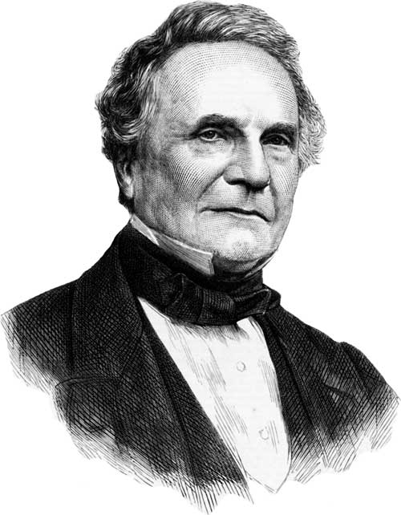
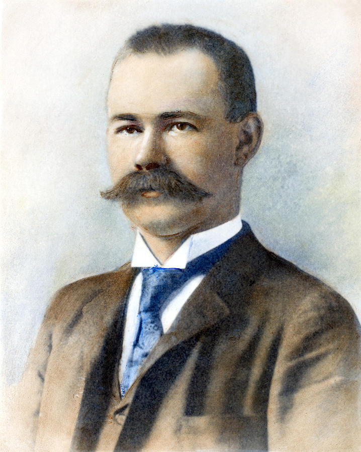
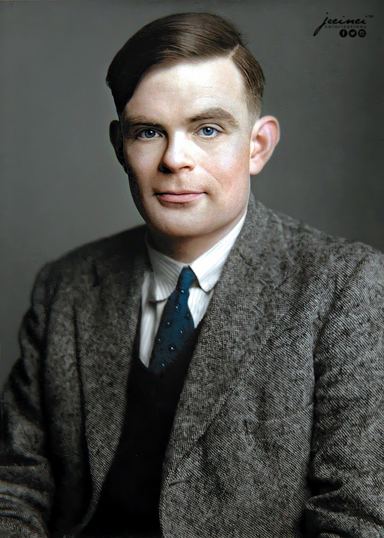
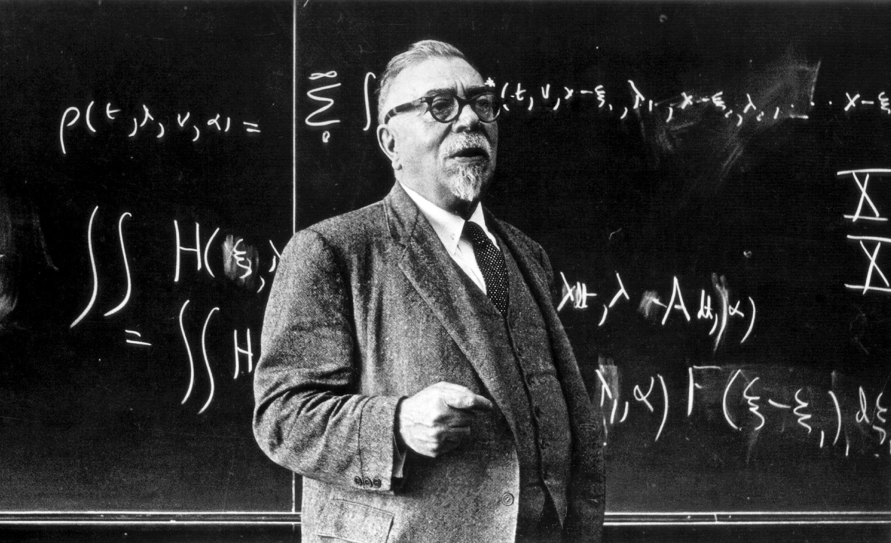
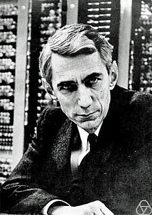
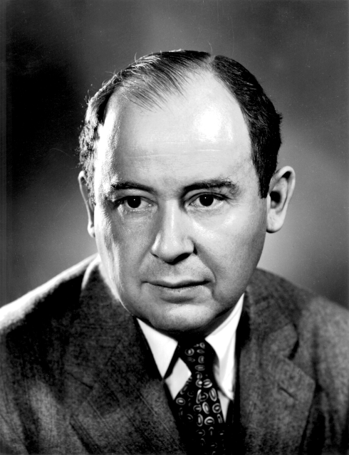
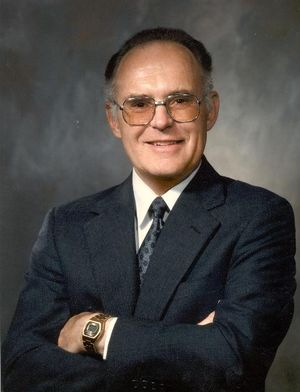
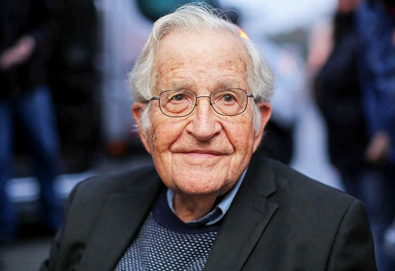

Aportaciones importantes en el área de computación
➢ Charles Babbage.
Conocido por muchos como “El Padre de la computación”, nació según algunas fuentes en Teignmouth (provincia de Devonshire, Reino Unido), el 26 de diciembre 1791. Durante los últimos años de su vida residió en Londres, dedicándose a la construcción de máquinas capaces de la ejecución de operaciones aritméticas y cálculos algebraicos. Propuso el sistema de franqueo postal que utilizamos hoy en día.
Principales Inventos y Aportes.
Maquina Analítica:
Entre 1833 y 1842, Babbage lo intentó de nuevo; esta vez, intentó construir una máquina que fuese programable para hacer cualquier tipo de cálculo, no sólo los referentes al cálculo de tablas logarítmicas o funciones polinómicas. Ésta fue la máquina analítica. El diseño se basaba en el telar de Joseph Marie Jacquard, el cual usaba tarjetas perforadas para realizar diseños en el tejido.
Planos de la Impresora:
Los planos del matemático y científico incluían un componente de impresión al desarrollar la maquina analítica, el cual ha sido reconstruido por el Museo y es funcional. Esta impresora consta de 8000 piezas mecánicas y pesa aproximadamente 2,5 toneladas.
➢ Charles Babbage.
(Herman o Hermann Hollerith; Buffalo, 1860 - Washington, 1929) Estadístico estadounidense considerado uno de los pioneros de la informática por su invención de las máquinas estadísticas de tarjetas o fichas perforadas, con las que logró automatizar los trabajos de cómputo y clasificación de grandes volúmenes de información.
Herman Hollerith fue un hombre que revolucionó el tratamiento a gran escala de información mediante la automatización, y por tanto el primer informático. Inventor de la máquina tabuladora y fundador de una de las empresas que se fusionaron en CRT, posteriormente renombrada como IBM. En 1887 acaba su primera máquina y comienza a probarla en el Departamento de Salud de Baltimore con gran éxito. En 1896 decidió que ya era hora de establecer la compañía que se dedicaría a esta máquina, así fundó la Tabulating Machine Company
Hollerith continuó introduciendo mejoras y diseñando nuevas máquinas, y en 1896 fundó la Tabulating Machine Company, empresa dedicada a la fabricación y comercialización de máquinas procesadoras de datos. Esta empresa pasó a llamarse en 1924 International Business Machines (IBM), y se convertiría tras la Segunda Guerra Mundial en una de las compañías punteras del sector informático.
➢ Alan Turing
(Alan Mathison Turing; Londres, 1912 - Wilmslow, Reino Unido, 1954) Matemático británico. Pasó sus primeros trece años en la India, donde su padre trabajaba en la Administración colonial. De regreso al Reino Unido, estudió en el King's College y, tras su graduación, se trasladó a la Universidad estadounidense de Princeton, donde trabajó con el lógico Alonzo Church.
Aportaciones
Máquina de Turing
Elemento fundamental en la teoría de la computación, este dispositivo se encarga del proceso automático para determinar si un problema matemático puede ser resuelto o no mediante un procedimiento definido. Fue ideado para resolver una operación concreta.
Máquina universal de Turing
Turing la concibió en 1936, el mismo año que teorizó acerca de la máquina de Turing. Su punto de partida es el mismo que el de aquella: resolver todos los problemas matemáticos que pueden expresarse mediante un algoritmo. La diferencia radica en que la máquina universal se asemeja a un ordenador gracias a su capacidad de llevar a cabo múltiples procesos y de ejecutar la función de cualquier máquina de Turing.
El concepto de hipercomputación
La hipercomputación es la computación o resolución de las tareas que no puede resolver una máquina de Turing. Partiendo de esta idea, en 1938, Turing lanzó la idea de las máquinas oráculo, dedicadas a abordar las tareas que no pueden ser resueltas mediante un algoritmo.
Pilot Model ACE
Basada en 1950 en un diseño de Turing, fue la primera computadora electrónica desarrollada en Gran Bretaña. Es el desarrollo práctico (no mecánico) de la máquina universal de Turing. Almacenaba un programa en su memoria y gestionaba un lenguaje de programación, el Abbreviated Computer Instructions.
Test de Turing
Turing defendía que si una máquina tiene un comportamiento inteligente en todos los aspectos, entonces es inteligente. Para someter esto a examen, creó el test de Turing: una persona actuando como juez se coloca en una habitación y, en otra, una persona y un ordenador. El juez tiene que saber quién es quién a partir de sus respuestas escritas. Si no los distingue, significa que el ordenador ha superado la prueba. Hasta hoy ninguno lo ha logrado.
Biología matemática
De 1952 a 1954, cuando murió, Turing se dedicó al estudio de la morfogénesis, el proceso biológico que lleva a que un organismo desarrolle su forma. Así, Turing lanzó la idea de que la repetición de patrones regulares en el sistema biológico animal, como las rayas en las pieles de las cebras o de los tigres, se debía a dos morfógenos (sustancias químicas) que trabajan a la vez como activadores e inhibidores. Los científicos del King’s College confirmaron la intuición de Turing en 2012.
➢ Norbert Wiener.
(Columbia, Estados Unidos, 1894 - Estocolmo, 1964) Matemático estadounidense, fundador de la cibernética. Hijo de un profesor de lenguas eslavas emigrado a Harvard, fue un niño extremadamente precoz que a la temprana edad de dieciocho años obtuvo un doctorado de lógica matemática en Cambridge (Reino Unido), donde estudió con Bertrand Russell y Godfrey Harold Hardy.
Aportaciones
La Cibernética
Cibernética, palabra que hizo derivar de la voz griega kubernetes (Κυβερνήτης) o timonel, misma raíz de la cual procede el término gobierno y sus derivados.
La noción de feedback
es un elemento clave de la teoría cibernética. Se refiere al retorno de salida al interior de un circuito de información, aspecto que habilita la posibilidad de controlar el comportamiento de un sistema, sea técnico, físico, biológico o social.
Cibernética y cíborgs
el cíborg es un organismo capaz de integrar eficaz e inconscientemente los componentes externos que expanden las funciones que regulan su cuerpo y su mente. Esto es: un sistema orgánico que integra a sus mecanismos autopoiéticos (Maturana y Varela 1995) extensiones no-biológicas que cooperan, sin el beneficio de la conciencia, con sus controles homeostáticos autónomos.
➢ Claude Shannon
(Claude Elwood Shannon; Gaylord, 1916 - Medford, 2001) Ingeniero estadounidense, padre de la moderna teoría de la información, una formulación matemática que analiza las unidades de información (bits) y su pérdida en los procesos de transmisión. Claude Shannon se graduó en ingeniería por la Universidad de Michigan en 1936 y, cuatro años más tarde, obtuvo un doctorado de matemáticas en el Massachusetts Institute of Technology.
Entre los mayores logros de Claude Shannon se encuentra el sentar las bases de la teoría del diseño de circuitos digitales, pero además fue capaz de rescatar el álgebra booleana 70 años después de su nacimiento y demostrar que existía en ella una relación lógico-numérica. Claude Shannon publicó A mathematical theory of communication (Una teoría matemática de la comunicación), demostrando que todas las fuentes de información eran medibles Claude Shannon también puede ser considerado el padre de los ordenadores y de los programas que juegan al ajedrez
➢ John von Neuman.
De origen húngaro, fue un gran matemático del siglo XX que realizó contribuciones importantes en la física cuántica, análisis funcional, teoría de conjuntos, ciencias de comunicación, economía, análisis numérico, cibernética, hidrodinámica de expresiones, estadística y otros campos de las matemáticas. La necesidad de automatizar sistemas complejos en unidades de tratamiento y memorias de flujos de información lo llevaron a plantear cuestiones sobre la posibilidad de reproducir maquinas autómatas. Lo cual le llevo a participar en la construcción de las primeras computadoras, de ahí su teoría de la arquitectura von neuman. También creo el campo de los autómatas celulares sin computadores, construyendo los primeros ejemplos de autómatas autorreplicables con lápiz y papel. El concepto de constructor universal fue presentado en su trabajo póstumo “Teoría de los autómatas autor reproductivos”.
➢ Gordon Moore
Gordon Moore es un ingeniero y empresario estadounidense cofundador de la empresa de tecnología Intel Corporation. Es el formulador de la llamada Ley de Moore, un visionario pionero de Silicon Valley en el desarrollo de los semiconductores y los microprocesadores.
Después de trabajar para varios laboratorios especializados decidió iniciar su propia empresa. En Intel hizo carrera primero como vicepresidente y luego como presidente y CEO hasta 1987, cuando se retiró. Actualmente sigue colaborando en la empresa como miembro honorario de la junta directiva y es un destacado mecenas de la investigación.
Ley de Moore
Indicaba que, aproximadamente, cada 18 meses se duplica el número de transistores que se incluyen en un circuito integrado y su coste, a pesar de la complejidad, también se reduciría . Gordon Moore permanecería en Fairchild Semiconductor hasta el año 1968, momento en el que se unió a Robert Noyce para emprender un nuevo proyecto: Intel Corporation
➢ Alonzo Church.

(Washington, 1903 - Hudson, 1995) Matemático estadounidense. Profesor en la Universidad de Princeton y en la de California, se especializó en lógica matemática, metalógica y metamatemática.
Matemático. Creador de algunas de las bases de la Informática Teórica. Estableció el concepto de calculabilidad y su demostración de la indecidibilidad de la lógica de primer orden, conocido como Tesis de Church. Desarrolló el cálculo de conversión Lambda en 1936, que permite efectuar operaciones lógicas con variables generalizadas, demostrando la presencia de problemas indecidibles. Desarrolló asimismo el cálculo de conversión lambda, que permite efectuar operaciones lógicas con variables generalizadas. Destacan, dentro de su abundante producción teórica, sus obras Cálculo de conversión lambda (1941) e Introducción a la lógica matemática (1944). Church difundió sus trabajos a través del Journal of Symbolic Logic, publicación que él mismo dirigía y editaba desde 1936.
➢ Noam Chomsky.
En cuanto a la relación de Chomsky con la informática proviene de sus importantes aportaciones a la teoría de autómatas y al estudio de los lenguajes formales. Dichas aportaciones han resultado elementos indispensables para la construcción de compiladores y traductores que puedan servir de intérpretes válidos entre las órdenes que dan los seres humanos y su correcta recepción y aplicación por máquinas automáticas. Puede decirse que el papel desempeñado por Chomsky ha resultado crucial en este importante campo, pues fue imprescindible para dar el siguiente paso tras los primeros computadores, el ENIAC o el propio ACE de Alan Turing, programados directamente en código binario, de forma que a mediados de 1954 su obra ya influyó en la especificación del borrador para el lenguaje Fortran, y en la conocida notación Backus-Naur. La jerarquía de Chomsky, que estableció en 1956 en su obra "Three models for the description of language" se convirtió en un concepto central en informática. Así, los lenguajes formales (que no admiten excepciones a las reglas) se dividen en cuatro niveles (tres en el estudio original), que son:
1. Lenguajes regulares.
2. Lenguajes libres del contexto.
3. Lenguajes sensibles al contexto.
4. Lenguajes recursivamente e numerables.